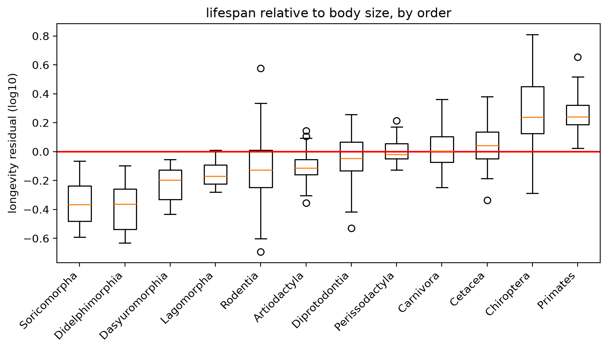

Residuals as biology · Part 5
Humans live 4.5 times longer than a mammal of their size should. Brandt’s bat, 7 g, should live about 6 years; one was recaptured after 41. Bats and primates sit above the line, opossums and shrews below.